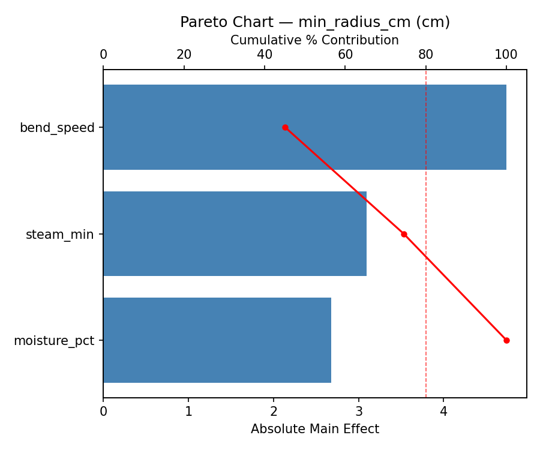
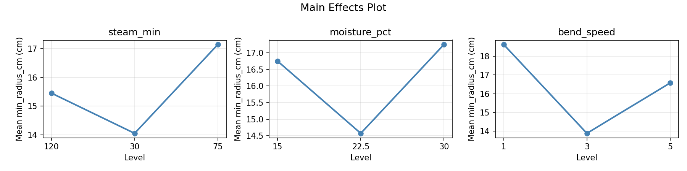
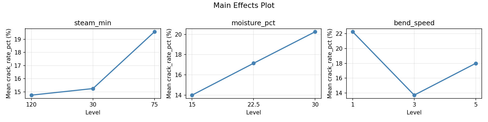
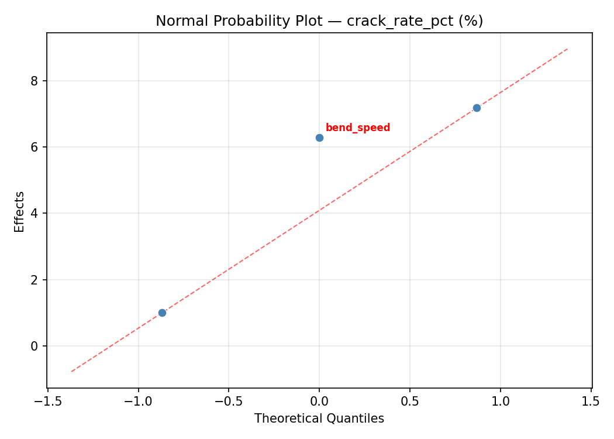
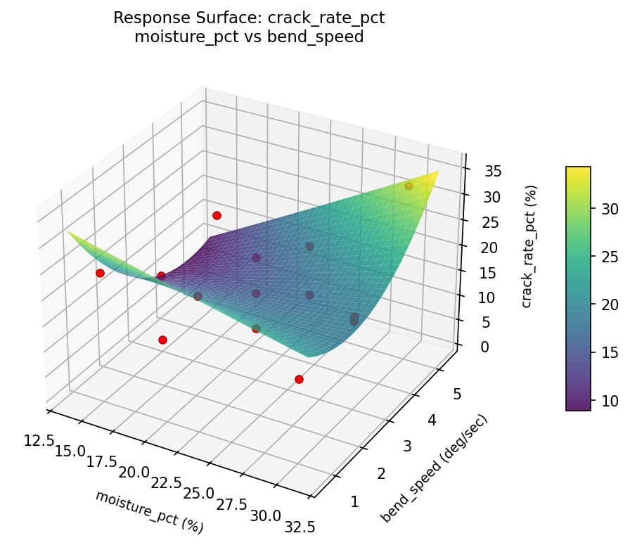
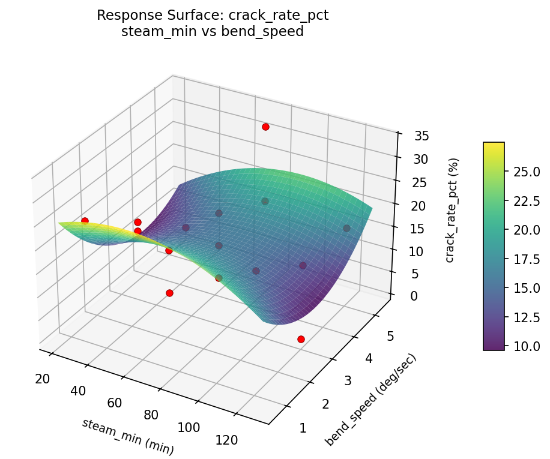
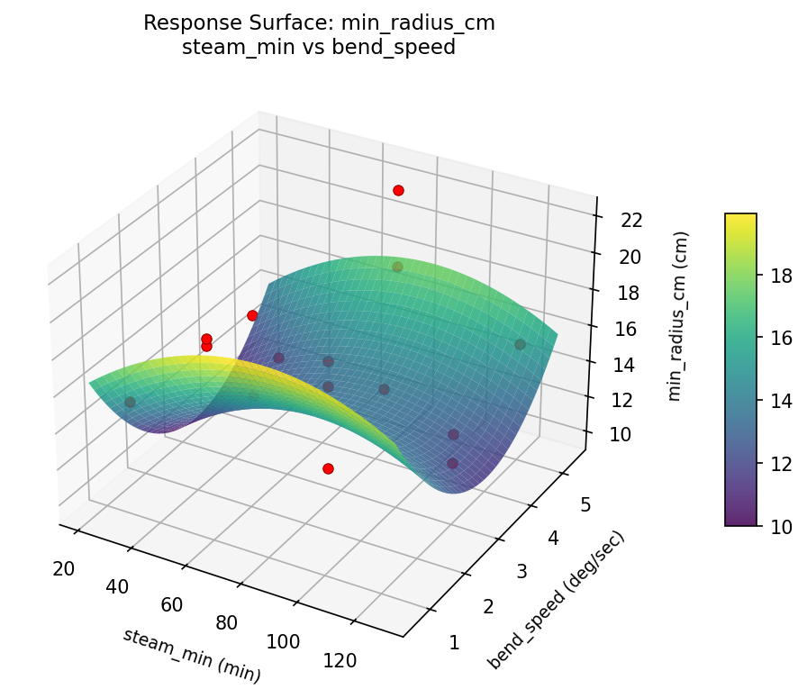
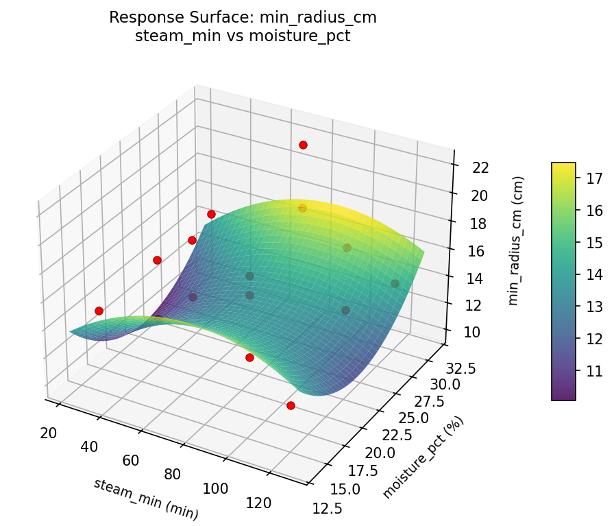

Summary
This experiment investigates steam bending parameters. Box-Behnken design to maximize bend radius achievable and minimize cracking by tuning steam time, wood moisture content, and bending speed.
The design varies 3 factors: steam min (min), ranging from 30 to 120, moisture pct (%), ranging from 15 to 30, and bend speed (deg/sec), ranging from 1 to 5. The goal is to optimize 2 responses: min radius cm (cm) (minimize) and crack rate pct (%) (minimize). Fixed conditions held constant across all runs include wood species = white_ash, thickness mm = 20.
A Box-Behnken design was chosen because it efficiently fits quadratic models with 3 continuous factors while avoiding extreme corner combinations — requiring only 15 runs instead of the 8 needed for a full factorial at two levels.
Quadratic response surface models were fitted to capture potential curvature and factor interactions. The RSM contour plots below visualize how pairs of factors jointly affect each response.
Key Findings
For min radius cm, the most influential factors were moisture pct (62.2%), steam min (24.6%), bend speed (13.2%). The best observed value was 10.0 (at steam min = 75, moisture pct = 22.5, bend speed = 3).
For crack rate pct, the most influential factors were moisture pct (51.0%), bend speed (26.0%), steam min (23.0%). The best observed value was 1.0 (at steam min = 120, moisture pct = 22.5, bend speed = 1).
Recommended Next Steps
- Run confirmation experiments at the predicted optimal settings to validate the model.
- Consider whether any fixed factors should be varied in a future study.
Experimental Setup
Factors
| Factor | Low | High | Unit |
|---|
steam_min | 30 | 120 | min |
moisture_pct | 15 | 30 | % |
bend_speed | 1 | 5 | deg/sec |
Fixed: wood_species = white_ash, thickness_mm = 20
Responses
| Response | Direction | Unit |
|---|
min_radius_cm | ↓ minimize | cm |
crack_rate_pct | ↓ minimize | % |
Configuration
{
"metadata": {
"name": "Steam Bending Parameters",
"description": "Box-Behnken design to maximize bend radius achievable and minimize cracking by tuning steam time, wood moisture content, and bending speed"
},
"factors": [
{
"name": "steam_min",
"levels": [
"30",
"120"
],
"type": "continuous",
"unit": "min"
},
{
"name": "moisture_pct",
"levels": [
"15",
"30"
],
"type": "continuous",
"unit": "%"
},
{
"name": "bend_speed",
"levels": [
"1",
"5"
],
"type": "continuous",
"unit": "deg/sec"
}
],
"fixed_factors": {
"wood_species": "white_ash",
"thickness_mm": "20"
},
"responses": [
{
"name": "min_radius_cm",
"optimize": "minimize",
"unit": "cm"
},
{
"name": "crack_rate_pct",
"optimize": "minimize",
"unit": "%"
}
],
"settings": {
"operation": "box_behnken",
"test_script": "use_cases/204_wood_bending/sim.sh"
}
}
Experimental Matrix
The Box-Behnken Design produces 15 runs. Each row is one experiment with specific factor settings.
| Run | steam_min | moisture_pct | bend_speed |
|---|
| 1 | 75 | 15 | 1 |
| 2 | 75 | 22.5 | 3 |
| 3 | 120 | 22.5 | 5 |
| 4 | 120 | 22.5 | 1 |
| 5 | 75 | 22.5 | 3 |
| 6 | 75 | 22.5 | 3 |
| 7 | 30 | 22.5 | 5 |
| 8 | 120 | 15 | 3 |
| 9 | 75 | 15 | 5 |
| 10 | 120 | 30 | 3 |
| 11 | 30 | 22.5 | 1 |
| 12 | 75 | 30 | 5 |
| 13 | 30 | 15 | 3 |
| 14 | 30 | 30 | 3 |
| 15 | 75 | 30 | 1 |
Step-by-Step Workflow
1
Preview the design
$ doe info --config use_cases/204_wood_bending/config.json
2
Generate the runner script
$ doe generate --config use_cases/204_wood_bending/config.json \
--output use_cases/204_wood_bending/results/run.sh --seed 42
3
Execute the experiments
$ bash use_cases/204_wood_bending/results/run.sh
4
Analyze results
$ doe analyze --config use_cases/204_wood_bending/config.json
5
Get optimization recommendations
$ doe optimize --config use_cases/204_wood_bending/config.json
6
Multi-objective optimization
With 2 competing responses, use --multi to find the best compromise via Derringer–Suich desirability.
$ doe optimize --config use_cases/204_wood_bending/config.json --multi
7
Generate the HTML report
$ doe report --config use_cases/204_wood_bending/config.json \
--output use_cases/204_wood_bending/results/report.html
Features Exercised
| Feature | Value |
|---|
| Design type | box_behnken |
| Factor types | continuous (all 3) |
| Arg style | double-dash |
| Responses | 2 (min_radius_cm ↓, crack_rate_pct ↓) |
| Total runs | 15 |
Analysis Results
Generated from actual experiment runs using the DOE Helper Tool.
Response: min_radius_cm
Top factors: moisture_pct (62.2%), steam_min (24.6%), bend_speed (13.2%).
ANOVA
| Source | DF | SS | MS | F | p-value |
|---|
| Source | DF | SS | MS | F | p-value |
| steam_min | 2 | 9.2348 | 4.6174 | 0.574 | 0.5848 |
| moisture_pct | 2 | 54.2615 | 27.1308 | 3.373 | 0.0866 |
| bend_speed | 2 | 2.7687 | 1.3843 | 0.172 | 0.8449 |
| Lack | of | Fit | 6 | 94.1617 | 15.6936 |
| Pure | Error | 2 | 16.0867 | | |
| Error | 8 | 110.2483 | 8.0433 | | |
| Total | 14 | 176.5133 | 12.6081 | | |
Pareto Chart

Main Effects Plot

Normal Probability Plot of Effects

Half-Normal Plot of Effects

Model Diagnostics

Response: crack_rate_pct
Top factors: moisture_pct (51.0%), bend_speed (26.0%), steam_min (23.0%).
ANOVA
| Source | DF | SS | MS | F | p-value |
|---|
| Source | DF | SS | MS | F | p-value |
| steam_min | 2 | 53.3762 | 26.6881 | 1.195 | 0.3515 |
| moisture_pct | 2 | 259.2690 | 129.6345 | 5.805 | 0.0277 |
| bend_speed | 2 | 87.5548 | 43.7774 | 1.960 | 0.2029 |
| Lack | of | Fit | 6 | 480.8667 | 80.1444 |
| Pure | Error | 2 | 44.6667 | | |
| Error | 8 | 525.5333 | 22.3333 | | |
| Total | 14 | 925.7333 | 66.1238 | | |
Pareto Chart

Main Effects Plot

Normal Probability Plot of Effects

Half-Normal Plot of Effects

Model Diagnostics

Response Surface Plots
3D surfaces fitted with quadratic RSM. Red dots are observed data points.
crack rate pct moisture pct vs bend speed

crack rate pct steam min vs bend speed

crack rate pct steam min vs moisture pct

min radius cm moisture pct vs bend speed

min radius cm steam min vs bend speed

min radius cm steam min vs moisture pct

Multi-Objective Optimization
When responses compete, Derringer–Suich desirability finds the best compromise.
Each response is scaled to a 0–1 desirability, then combined via a weighted geometric mean.
Overall Desirability
D = 0.8779
Per-Response Desirability
| Response | Weight | Desirability | Predicted | Dir |
|---|
min_radius_cm |
1.0 |
|
12.40 0.7742 12.40 cm |
↓ |
crack_rate_pct |
1.5 |
|
1.00 0.9545 1.00 % |
↓ |
Recommended Settings
| Factor | Value |
|---|
steam_min | 120 min |
moisture_pct | 22.5 % |
bend_speed | 5 deg/sec |
Source: from observed run #15
Trade-off Summary
Sacrifice = how much worse than single-objective best.
| Response | Predicted | Best Observed | Sacrifice |
|---|
crack_rate_pct | 1.00 | 1.00 | +0.00 |
Top 3 Runs by Desirability
| Run | D | Factor Settings |
|---|
| #4 | 0.8443 | steam_min=30, moisture_pct=22.5, bend_speed=5 |
| #10 | 0.8108 | steam_min=75, moisture_pct=15, bend_speed=1 |
Model Quality
| Response | R² | Type |
|---|
crack_rate_pct | 0.6847 | quadratic |
Full Multi-Objective Output
============================================================
MULTI-OBJECTIVE OPTIMIZATION
Method: Derringer-Suich Desirability Function
============================================================
Overall desirability: D = 0.8779
Response Weight Desirability Predicted Direction
---------------------------------------------------------------------
min_radius_cm 1.0 0.7742 12.40 cm ↓
crack_rate_pct 1.5 0.9545 1.00 % ↓
Recommended settings:
steam_min = 120 min
moisture_pct = 22.5 %
bend_speed = 5 deg/sec
(from observed run #15)
Trade-off summary:
min_radius_cm: 12.40 (best observed: 10.00, sacrifice: +2.40)
crack_rate_pct: 1.00 (best observed: 1.00, sacrifice: +0.00)
Model quality:
min_radius_cm: R² = 0.3331 (linear)
crack_rate_pct: R² = 0.6847 (quadratic)
Top 3 observed runs by overall desirability:
1. Run #15 (D=0.8779): steam_min=120, moisture_pct=22.5, bend_speed=5
2. Run #4 (D=0.8443): steam_min=30, moisture_pct=22.5, bend_speed=5
3. Run #10 (D=0.8108): steam_min=75, moisture_pct=15, bend_speed=1
Full Analysis Output
=== Main Effects: min_radius_cm ===
Factor Effect Std Error % Contribution
--------------------------------------------------------------
moisture_pct 4.9250 0.9168 62.2%
steam_min 1.9500 0.9168 24.6%
bend_speed 1.0429 0.9168 13.2%
=== ANOVA Table: min_radius_cm ===
Source DF SS MS F p-value
-----------------------------------------------------------------------------
steam_min 2 9.2348 4.6174 0.574 0.5848
moisture_pct 2 54.2615 27.1308 3.373 0.0866
bend_speed 2 2.7687 1.3843 0.172 0.8449
Lack of Fit 6 94.1617 15.6936 1.951 0.3770
Pure Error 2 16.0867 8.0433
Error 8 110.2483 8.0433
Total 14 176.5133 12.6081
=== Summary Statistics: min_radius_cm ===
steam_min:
Level N Mean Std Min Max
------------------------------------------------------------
120 4 15.2000 5.8109 10.0000 22.1000
30 4 17.1500 3.4424 14.0000 21.8000
75 7 15.5143 2.2520 12.4000 19.9000
moisture_pct:
Level N Mean Std Min Max
------------------------------------------------------------
15 4 12.8250 2.1484 10.0000 14.9000
22.5 7 16.5286 3.6605 10.8000 21.8000
30 4 17.7500 3.0556 15.3000 22.1000
bend_speed:
Level N Mean Std Min Max
------------------------------------------------------------
1 4 15.2000 2.2465 12.4000 17.9000
3 7 16.2429 4.0162 10.0000 22.1000
5 4 15.8750 4.5397 10.8000 21.8000
=== Main Effects: crack_rate_pct ===
Factor Effect Std Error % Contribution
--------------------------------------------------------------
moisture_pct 9.7500 2.0996 51.0%
bend_speed 4.9643 2.0996 26.0%
steam_min 4.3929 2.0996 23.0%
=== ANOVA Table: crack_rate_pct ===
Source DF SS MS F p-value
-----------------------------------------------------------------------------
steam_min 2 53.3762 26.6881 1.195 0.3515
moisture_pct 2 259.2690 129.6345 5.805 0.0277
bend_speed 2 87.5548 43.7774 1.960 0.2029
Lack of Fit 6 480.8667 80.1444 3.589 0.2339
Pure Error 2 44.6667 22.3333
Error 8 525.5333 22.3333
Total 14 925.7333 66.1238
=== Summary Statistics: crack_rate_pct ===
steam_min:
Level N Mean Std Min Max
------------------------------------------------------------
120 4 16.2500 12.0934 6.0000 33.0000
30 4 20.2500 4.9917 15.0000 25.0000
75 7 15.8571 7.7337 1.0000 25.0000
moisture_pct:
Level N Mean Std Min Max
------------------------------------------------------------
15 4 10.2500 6.9940 1.0000 17.0000
22.5 7 19.4286 6.9966 6.0000 25.0000
30 4 20.0000 8.6795 15.0000 33.0000
bend_speed:
Level N Mean Std Min Max
------------------------------------------------------------
1 4 14.7500 10.0125 1.0000 25.0000
3 7 19.7143 7.8891 9.0000 33.0000
5 4 15.0000 7.3937 6.0000 24.0000
Optimization Recommendations
=== Optimization: min_radius_cm ===
Direction: minimize
Best observed run: #10
steam_min = 75
moisture_pct = 22.5
bend_speed = 3
Value: 10.0
RSM Model (linear, R² = 0.2271, Adj R² = 0.0164):
Coefficients:
intercept +15.8667
steam_min -1.9875
moisture_pct -0.8375
bend_speed +0.6000
RSM Model (quadratic, R² = 0.5722, Adj R² = -0.1979):
Coefficients:
intercept +14.4667
steam_min -1.9875
moisture_pct -0.8375
bend_speed +0.6000
steam_min*moisture_pct +2.8500
steam_min*bend_speed -1.1750
moisture_pct*bend_speed +1.8250
steam_min^2 +0.2667
moisture_pct^2 +1.1667
bend_speed^2 +1.1917
Curvature analysis:
bend_speed coef=+1.1917 convex (has a minimum)
moisture_pct coef=+1.1667 convex (has a minimum)
steam_min coef=+0.2667 convex (has a minimum)
Notable interactions:
steam_min*moisture_pct coef=+2.8500 (synergistic)
moisture_pct*bend_speed coef=+1.8250 (synergistic)
steam_min*bend_speed coef=-1.1750 (antagonistic)
Predicted optimum (from linear model, at observed points):
steam_min = 30
moisture_pct = 15
bend_speed = 3
Predicted value: 18.6917
Surface optimum (via L-BFGS-B, linear model):
steam_min = 120
moisture_pct = 30
bend_speed = 1
Predicted value: 12.4417
Model quality: Weak fit — consider adding center points or using a different design.
Factor importance:
1. steam_min (effect: 4.0, contribution: 52.5%)
2. moisture_pct (effect: 1.9, contribution: 25.1%)
3. bend_speed (effect: 1.7, contribution: 22.3%)
=== Optimization: crack_rate_pct ===
Direction: minimize
Best observed run: #15
steam_min = 120
moisture_pct = 22.5
bend_speed = 1
Value: 1.0
RSM Model (linear, R² = 0.3751, Adj R² = 0.2047):
Coefficients:
intercept +17.1333
steam_min -6.5000
moisture_pct -0.8750
bend_speed +0.6250
RSM Model (quadratic, R² = 0.8615, Adj R² = 0.6121):
Coefficients:
intercept +14.0000
steam_min -6.5000
moisture_pct -0.8750
bend_speed +0.6250
steam_min*moisture_pct +4.5000
steam_min*bend_speed +3.0000
moisture_pct*bend_speed +6.2500
steam_min^2 -2.8750
moisture_pct^2 +4.3750
bend_speed^2 +4.3750
Curvature analysis:
bend_speed coef=+4.3750 convex (has a minimum)
moisture_pct coef=+4.3750 convex (has a minimum)
steam_min coef=-2.8750 concave (has a maximum)
Notable interactions:
moisture_pct*bend_speed coef=+6.2500 (synergistic)
steam_min*moisture_pct coef=+4.5000 (synergistic)
steam_min*bend_speed coef=+3.0000 (synergistic)
Predicted optimum (from quadratic model, at observed points):
steam_min = 75
moisture_pct = 15
bend_speed = 1
Predicted value: 29.2500
Surface optimum (via L-BFGS-B, quadratic model):
steam_min = 120
moisture_pct = 20.6875
bend_speed = 2.51667
Predicted value: 3.7490
Model quality: Good fit — general trends are captured, some noise remains.
Factor importance:
1. steam_min (effect: 13.0, contribution: 56.4%)
2. moisture_pct (effect: 5.1, contribution: 22.3%)
3. bend_speed (effect: 4.9, contribution: 21.2%)